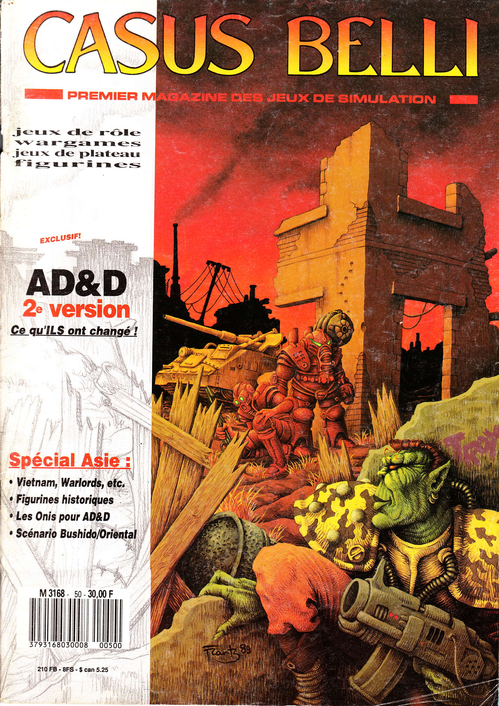

Et on continue dans notre année 1989, pour ce bimestriel mars – avril, paru manifestement avec un peu de retard si on en lit l’édito rageur et consterné par rapport à la volonté d’offrir LE scoop sur la toute nouvelle 2ème édition d’AD&D, parue dans les délais et qui est donc la grosse révolution de ce début d’année.
Dans le reste du monde, les révolutions continuent à se faire attendre. Je ferai donc plus court que sur la chronologie du numéro précédent car les actualités de ce bimestre restent dans la même lignée.
Pourtant, on peut noter le naufrage de l’Exxon Valdez dont l’ampleur a la même résonnance chez nous qu’avec le précédent Amoco Cadiz, même si c’est localisé dans le lointain Alaska. L’écologie sociétale et politique commence en effet à émerger. C’est en effet à la même période que le chanteur Sting fait une tournée mondiale des plateaux TV en compagnie du chef indien Raoni, et tranquillement les messages et la cause écologiste s’installent dans le débat de la société.
Toujours aux Etats-Unis, le chômage descend à 5%, ce qui semble irréel de notre côté de l’Atlantique où aucune solution ne parvient à endiguer ce fléau social. Plus anecdotique, Rain Man rafle l’oscar du Meilleur Film de cette année.
On parlait de révolutions à venir : c’est en ce mois d’avril 1989 que les premiers rassemblements s’installent sur la place Tian’anmen, avant que le régime ne s’emballe… Comme pour la Chine, ce bimestre accélère en Europe de l’Est, même si c’est encore assez peu perceptible, les événements historiques qui vont survenir. Après des mois de trouble, Solidarnosc est légalisé en Pologne, et des libertés civiques et politiques sont accordées. Mais c’est de Hongrie que viendra l’événement le plus retentissant avec le projet de démantèlement du Rideau de Fer entre ce pays et l’Autriche frontalière. En URSS, les premières élections libres se déroulent depuis 1917. Si celles-ci confirment la mainmise du Parti Communiste (88%) grâce au vote des campagnes, celui-ci ne retrouve pas un nouvel élan puisque la division entre réformateurs et conservateurs perdurent. Le vote dans les grandes villes d’Union Soviétique est plus contrasté et consacre des opposants, à l’instar du retour de Boris Eltsine à Moscou.
Si ces soulèvements donnent le sentiment en Europe de l’Ouest d’un vent de liberté qui se lève, il se fait aussi sous la menace des nationalismes et séparatismes qui se profilent : Géorgie et Abkhazie, Serbie et Kosovo, avec l’arrivée au pouvoir notamment de Slobodan Milosevic.
En Europe de l’Ouest, l’actualité est plus sage : la création de la monnaie unique, qui deviendra l’euro 10 ans plus tard, commence à se dessiner, et la tragédie du stade de Sheffield au Royaume-Uni provoque la mort de près de 100 personnes, sur fond de hooliganisme, et surtout de manquements à la sécurité. En France, c’est les élections municipales de mars qui occupent principalement l’actualité, où malgré le climat social tendu des derniers mois, la gauche confirme sa réinstallation au pouvoir, et rafle des grandes villes comme Nantes, Strasbourg, Brest, Orléans, Aix en Provence, Mulhouse… Sinon, un peu avant notre bi-centenaire de la Révolution, on consacre un ancien symbole royal avec l’inauguration du Grand Louvre, et sa nouvelle pyramide de verre. Plus anecdotique, c’est aussi l’ouverture du Parc Astérix, 3 ans avant Disneyland Paris.
Après cette courte revue , j’attaque maintenant ce numéro 50 sous une couverture de Frantz Auberlet. Son nom ne me parlait pas davantage, mais il s’agit de l’illustrateur de la couverture de Berlin XVIII – 2ème édition, et un rôliste des origines selon sa biographie sur le GROG (https://www.legrog.org/biographies/frantz-auberlet). Avec nos 35 ans d’eau qui ont coulé sous les ponts, je regarde régulièrement ceux que sont devenus ces combattants de la première époque et il semble bien que Frantz, à l’instar d’Anne dont on célébrait la mémoire il y a peu, nous ait quitté en 2017 à 50 ans. Encore une personne qui aura vécu les âges d’origine, et partie bien trop tôt !

Ce Casus Belli, comme on le voit sur la couverture, consacre ce numéro à l’événement de la sortie de la 2ème édition d’AD&D (enfin pour l’instant seulement du Player’s Handbook). Si l’édito enrage du léger retard de parution de ce Casus, qui empêche le scoop absolu avant même que la version n’ait atteint les cotes françaises, il ne vient pas pour autant dauber sur cette 2ème édition. Rappelons pourtant que Casus faisait partie quelques mois avant des contempteurs de cette version, suite à un parti-pris très pro-Gygax après son éviction de TSR, et en doutant que TSR arrive à tenir son planning ou puisse en sortir un produit correctement fini.
Le magazine démarre ensuite avec les événements ludiques passés et à venir : l’annonce de la 4ème édition (déjà ! le temps passe…) du Salon des Jeux de la Porte de Versailles, qui devient un rendez-vous annuel incontournable et pourtant toujours accolé avec celui de la Maquette ; et le débrief des grosses conventions de l’époque aujourd’hui révolues : le Jet d’Or réunissant à Vitrolles (!) plus de 400 joueurs ou la Manu à Nantes, entre autres.
Je passe rapidement sur la revue SF qui m’inspire moyennement avec ce numéro et consacre particulièrement Onze bonzes de bronze de Max Anthony et Machines Infernales de KW Jeter. Les auteurs étant restés confidentiels, je reste toujours interloqué s’il s’agissait de livres visionnaires qui mériteraient d’être redécouverts, ou d’enthousiasme de Roland C. Wagner aussi éphémère qu’un feu de paille. A vous de faire votre opinion ! Pour la BD, les sorties sur des titres qui sont restés dans ma mémoire sont pour Les Tours de Bois-Maury ou Les Souvenirs de la pendule. Comme l’Asie est à l’honneur dans le dossier Wargame, André Foussat fait aussi un recensement des séries BD dédiées à ce continent : Le Vent des Dieux ou The Nam par exemple.
Sur les sorties JDResques, on a toujours cette dichotomie entre une production nationale abondante, alors que celle anglo-saxonne est terne. Dans les sorties chez nous, du bon, du lourd et de l’atypique : 3ème édition de Bitume, Hurlements, Athanor chez Siroz, Les Divisions de l’Ombre chez Flamberge qui apparaît comme nouvel éditeur, Technoguerriers (la seule et unique traduction du JDR Battletech) chez Hexagonal, Les Monts Arc en Ciel pour Runequest chez Oriflam, et donc un énigmatique Laborinthus chez un énigmatique nouvel éditeur suisse, ECG. Transecom annonce pour sa part une traduction du Player‘s Handbook courant de cette année 1989, alors que la traduction de l’ensemble de la 1ère édition d’AD&D a été achevée il y a peu : la fête continue (elle va être malheureusement de courte durée) !
C’est donc plus morose sur les rivages d’en face, un peu à l’image du numéro précédent : c’est surtout GDW qui continue de porter le marché, avec aussi un peu d’ICE (le Compagnon 3 pour Rolemaster), de Steve Jackson Games (GURPS Ice Age), de FASA (Casus s’intéresse au développement la gamme Battletech). TSR se concentre donc sur la sortie de la 2ème édition, tandis que la paire Margaret Weis et Tracy Hickman tentent, comme Gygax, d’exister en dehors cet éditeur en lançant The Darksword Adventures. Games Worskhop confirme pour sa part son retrait progressif du marché, avec plus aucune annonce JDR pour ce bimestre.
Les Têtes d’Affiche sont un peu à l’aune de cette disette temporaire du JDR : elles nous présentent Space 1889 et son pendant Jeu de Plateau Sky Galleons of Mars, la traduction de Killer de SJG par Descartes et côté création française, Aux Armes, Citoyens ! qui arrive donc à point nommé pour ce bi-centenaire. Enfin, Tristan réalise un tiercé gagnant avec les excellentissimes Les Dieux de Glorantha, le Manuel du Service Q et le Guide pour Star Wars. Casus complète comme il peut cette rubrique avec pas mal de wargames ou de jeu de plateau, notamment la traduction de La Fureur de Dracula par Oriflam. La moisson étant limitée, on n’aura pas d’Epreuve du Feu avec ce numéro, mais deux Portraits de Famille sur Top Secret / SI chez TSR, et la gamme naissante mais qui grossit, grossit de GURPS (revue par CROC). Enfin, Whog Shrog a le bénéfice d’une critique étendue et d’un scénario d’introduction. On notera les commentaires un peu navrés de Jean Balczesak sur le style très viril dirons-nous du jeu, et qui ne passerait assurément plus du tout aujourd’hui…
L’actualité est donc surtout portée par le décortiquage fait par Casus de la nouvelle 2ème édition d’AD&D et des changements apportés. Véritable critique avant l’heure alors que le Player’s Guide vient à peine de paraître, Pierre Rosenthal se livre à une autopsie minutieuse sur les changements et les continuités de cette 2ème édition, et en émet un verdict positif mais pas non plus emballé.
Le cahier des scénarios vient proposer un Bushido / Oriental Adventures de la regrettée Anne Vétillard et qui est encore tout à fait recommandable pour être transplanté à Rokugan. On le complètera avec l’aide de jeu proposée par François Marcela-Froideval sur les Onis, plutôt bien fournis et dont la palette de couleurs m’interroge sur ce qui relève vraiment de la légende japonaise, et ce qui est plutôt le produit d’un rédacteur de bestiaire AD&D. Les statistiques sont évidemment en 1ère édition s:mile:
On trouvera aussi un MultiMondes de @Tristan, pas inoubliable à l’instar du jeu mais que j’aurais bien vu converti en scénario rapide pour Shadowrun (il est question de magouille politique et d’enquête), si on voulait aujourd’hui le recycler. Suit un Appel de Cthulhu, pas de Tristan mais de Pierre Zaplotny toujours aussi décalé et peu convaincant : il s’agit ici surtout d’un événementiel autour d’une intrigue contemporaine d’inspiration vaguement lovecraftienne, et qui s’appuie sur un événement de juin 1988 s’étant déroulé à Tours : plus à lire pour les plans de ville d’époque et les prix en francs. Et enfin le traditionnel AD&D encore 1ère édition de Denis Beck, l’Almenivar : celui-ci, bien que très classique avec ses salles, ses pièges et ses monstres, recèle un subterfuge que le MJ pourra habilement utiliser avec l’introduction optionnelle proposée.
Denis Gerfaud propose ensuite un Profession : Gardien des Rêves, sur 3 pages, qui est plus une aide de jeu technique pour aborder la mécanique et l’ambiance de Rêve de Dragon qu’un article qui développe de nouvelles perspectives pour ce jeu. Pratique, il peut faire office de livret d’écran à un livret qui n’existe pas, et les règles ayant peu évolué sur les différentes éditions (dont celle du Scriptarium), une lecture et utilisation reste toujours d’actualité.
Enfin, la rubrique Bâtisses & Artifices consacre le 2ème volet sur l’emblématique Château-Fort médiéval, aussi excellent sinon encore meilleur, que le numéro précédent : Cyril Rayer et Brigitte Brunella y décrivent l’intérieur et la vie quotidienne à cette époque, en ne manquant pas de rappeler à quel point l’Ennui est le fléau de cette époque. Quel dommage que les bardes et conteurs de l’époque n’aient pas eu dans leurs rangs des Gary Gygax et Dave Arneson qui auraient permis de développer les jeux de rôle, même en se limitant à une page sur un parchemin !
On passe ensuite à la section Wargame qui zappe pour ce numéro la section Jeu de Plateau (eh oui, en ces années reculées, la production éditeur est encore très réduite et confidentielle par rapport à tout ce qui sort aujourd’hui). C’est un dossier sur L’art asiatique de la guerre qui couvre ce numéro et le suivant, toujours sous la houlette de Laurent Henninger. Son édito consacre la montée en puissance de la région : le déplacement du pivot du monde vers le Pacifique, le Japon, les 4 Dragons, l’Inde, voire la renaissance de l’héritage de Gengis Khan en Mongolie qui est encore un satellite de l’URSS. La Chine, encore considérée comme un nain dans la géopolitique locale, n’est en revanche même pas citée !
Vu la dimension historique et géographique de cette partie du monde, le sujet est (très) vaste et on va naviguer sur des titres très éclectiques. A défaut de jeu de plateau revu pour ce bimestre, on commence avec le Shogun de MB que Casus recommande. Puis un obscur mais également recommandé Warlords sur les Seigneurs de Guerre chinois après la révolution de 1911. La variante Samouraï pour Cry Havoc est aussi à l’honneur. Enfin, dans les parties pur Wargames, il sera question de Tokyo Express, qualifié de must absolu par Frank Stora pour jouer en solitaire. Et enfin, un gros dossier sur Vietnam de Victory Games, où on trouvera des conseils techniques et tactiques pour qui voudrait se lancer dans « monster game ».
La rubrique du courrier des lecteurs, récente mais pas encore très installée, vient bizarrement se trouver en fin de ce numéro. Elle est bien fournie : 2 pages écrites toutes petites, où on relèvera la première missive d’Edouard Kloczko qui portait l’étendard du Djihadisme Tolkieniste à l’époque (sans surprise, il voue aux gémonies ici la version JRTM), ou une passe d’arme politique entre lecteurs et Frank Stora, suite à sa critique sur le jeu de la Guerre Civile Espagnole, et sa conclusion maladroite pour ne pas dire douteuse…
Le Casus se referme et rendez-vous pour le prochain !